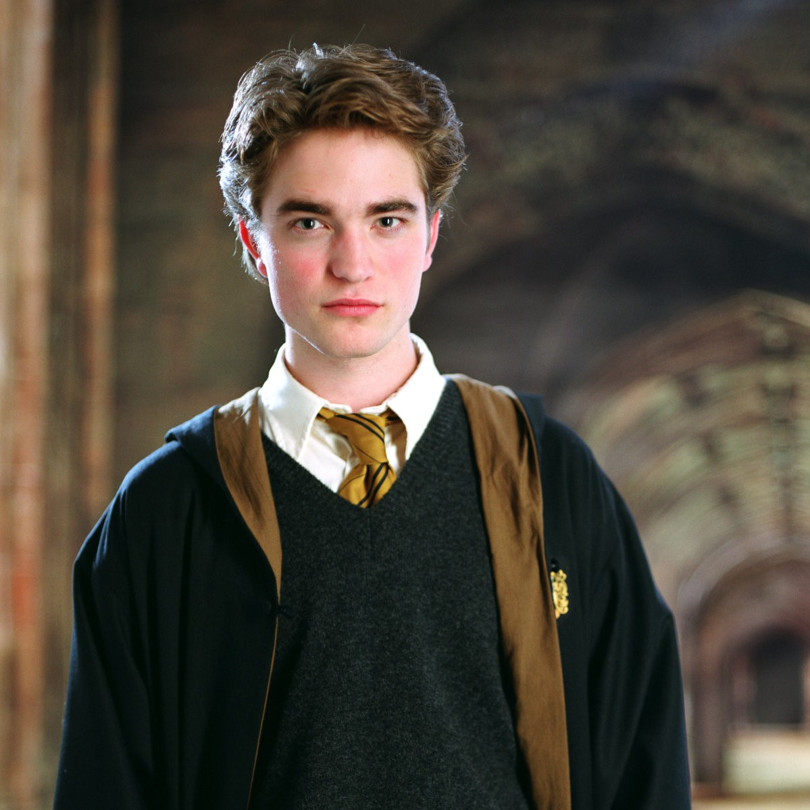

Cedric Diggory
"Remember, if the time should come, when you have to make a choice between what is right and what is easy, remember what happened to a boy who was good, and kind, and brave, because he strayed across the path of Lord Voldemort. Remember Cedric Diggory."
——Albus Dumbledore's eulogy to Cedric
Cedric Diggory (September/October, 1977 – 24 June, 1995) was the son of Amos Diggory and his wife. He started attending Hogwarts School of Witchcraft and Wizardry in 1989, and was sorted into Hufflepuff House. During his time at school he was a prefect and captained the Hufflepuff Quidditch team, playing as Seeker. In his sixth year Cedric put his name forward to compete in the Triwizard Tournament.
He was selected as the Hogwarts Triwizard Champion and, although overshadowed in the press by the entry of Harry Potter, Cedric enjoyed almost overwhelming support from the student body, and after the first two tasks, tied with Harry for first place. Cedric and Harry completed the Third Task together. Both took hold of the Triwizard Cup, which transported them to the Little Hangleton graveyard. In the graveyard, Cedric was murdered by Peter Pettigrew with the Killing Curse, on the order of Lord Voldemort.
During the following duel between Harry and Voldemort, Cedric's echo reappeared during Priori Incantatem, and helped the echoes of Harry's parents, Bertha Jorkins, and Frank Bryce hold off Voldemort long enough for him to escape. His only request was for Harry to take his body back to his parents, which Harry honoured.
In 2020, Diggory's participation in the Triwizard Tournament and subsequent death was the subject of Albus Potter and Scorpius Malfoy's time-travel antics at the request of Amos. They sought to save Cedric and created an alternate timeline where Cedric survived and became part of the Death Eaters, because of the humiliation they caused him when they tried to save his life. Cedric's original and heroic life and death was later restored.

Cedric Diggory
Gender: Male
Hair Colour: Dark
Eye colour: Grey
Family: Amos Diggory
House: Hufflepuff
Blood-Status: Pure-Blood
Wand: 121/4", Ash, unicorn hair
Title(s): Quidditch Captain, Seeker, Prefect, Triwizard Champion
Personality And Traits
"We'll celebrate a boy who was, kind and honest, and brave, and true right to the very end."
——Dumbledore regarding Cedric's character
Cedric was said to be an embodiment of the qualities of Hufflepuff House. He had a sense of fair play: during the 1993 Gryffindor/Hufflepuff match, despite his capture of the Golden Snitch (which ensured his team's victory), Cedric immediately offered to replay the match once he found out that his opponent, Harry Potter, had fallen from his broom due to the influence of the Dementors.[5] Later on, he provided Harry with information as to how to decipher the golden egg clue for the Second Task. After Harry saved him in the maze, Cedric realised that Harry was the one who truly deserved to take the Triwizard Cup, and had no qualms with openly acknowledging it, which actually resulted in an argument of sorts between them. This sense of fair play and his ability to accept there were those who were better than him is a definite testament to his nobility and his grace.
He also appeared to possess a strength of character that was not unlike Harry's. This came into play when Fleur's turning the force of her Veela charm on him while asking him to be her date for the Yule Ball. He refused, for he already had a date. Hence, it could be said that Cedric was a man of his word with remarkable inner strength, especially given how he was able to successfully resist the allure of Veela charm (which could be overwhelming) and keep his previously made promise.
Besides all this, Cedric was genuinely modest, telling his father that his victory in the Gryffindor/Hufflepuff Quidditch match had not been a truly fair one. All the female Gryffindor Chasers described him as being "strong and silent", suggesting that he was sensible enough to speak only when it was absolutely necessary. He was also courteously polite to foreigners: though he supported Ireland during the 1994 Quidditch World Cup final, he was still civil to Viktor Krum (who was from Bulgaria). The fact that his spirit's last request to Harry had only been to take his body back to his parents also proved that he loved his parents dearly.
While this side of him was never seen in the original timeline, he appeared to have a sense of honour and importance for his title at the school. This was proved by the fact that in one of the alternate timelines, in which he was humiliated during the Triwizard Tournament, this feeling of embarrassment eventually led him to join the Death Eaters. This means that if his pride or status was to ever been shot down enough, this feeling of anger would have turned him over to the Death Eaters.
Magical Abilities And Skills
"By the time he was your age, he could turn a whistle into a watch and have it sing you the time."
——Bartemius Crouch Jr (disguised as Alastor Moody) on Cedric's skills
Given how Cedric was chosen and subsequently acknowledged to be more than capable of participating in the Triwizard Tournament, it can be deduced that he was a skilful and competent wizard in his own right, with even Barty Crouch Jr acknowledging him as a talented wizard.[3] He was also an accomplished Quidditch player.
- Quidditch: As the Captain and Seeker of the Hufflepuff Quidditch team, Cedric was a skilful flyer and Quidditch player, especially since the position of Seeker was generally considered to be the hardest position to play. In particular, he was noted to have a very fast swerve.[5] He even defeated Harry Potter once, although this had been due to the presence of Dementors causing Harry to fall off his broom.
- Transfiguration: Cedric was shown to be skilled in Transfiguration, given how he transformed a rock into a dog during the first task of the Tournament, and apparently took the subject at N.E.W.T.-level.[3]
- Charms: Cedric was shown to be skilled in Charms, using a successful Bubble-Head Charm during the second task of the Tournament, and took the subject at N.E.W.T.-level.[3]
- Defence Against the Dark Arts: Cedric was skilled in spells taught in Defence against the Dark Arts.[9]
- Strong Will: Cedric was shown to possess an exceptionally strong willpower that could rival that of Harry's, and was able to accept defeat with a good grace. For instance, he was able to successfully resist Fleur's Veela charm and honour his previous arrangement with Cho, which was no easy feat as Veela charm could be particularly powerful, and Fleur seemed to be turning on the full force of it upon him. Later on, though it obviously cost him every ounce of resolution to do so, Cedric was willing to acknowledge Harry as the true winner by offering him the Triwizard Cup, despite the fact that it meant forgoing the glory that he - and by extension, his House - had fought so hard for.